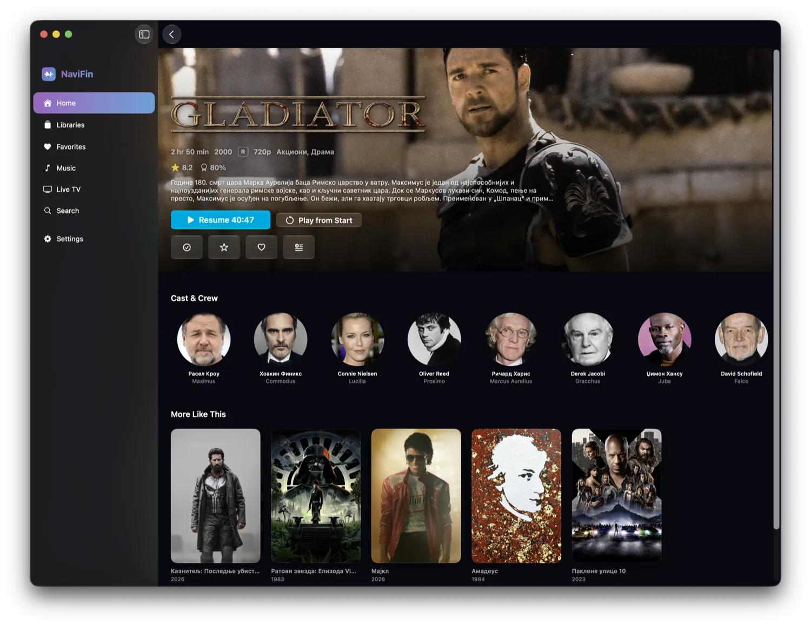
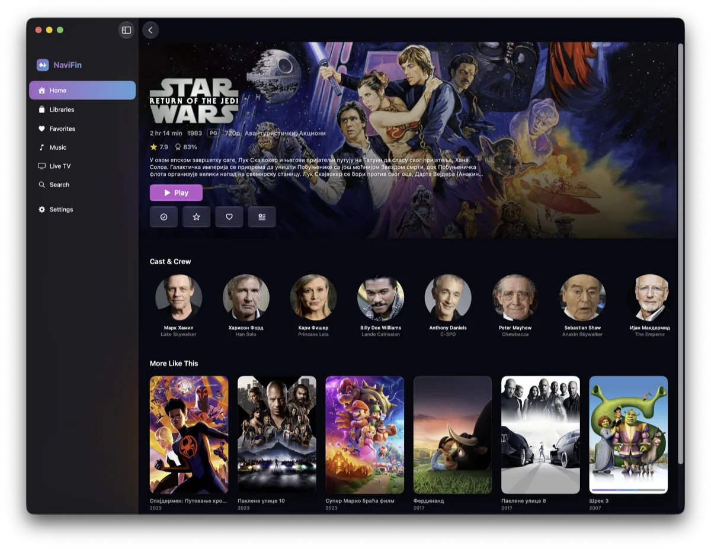
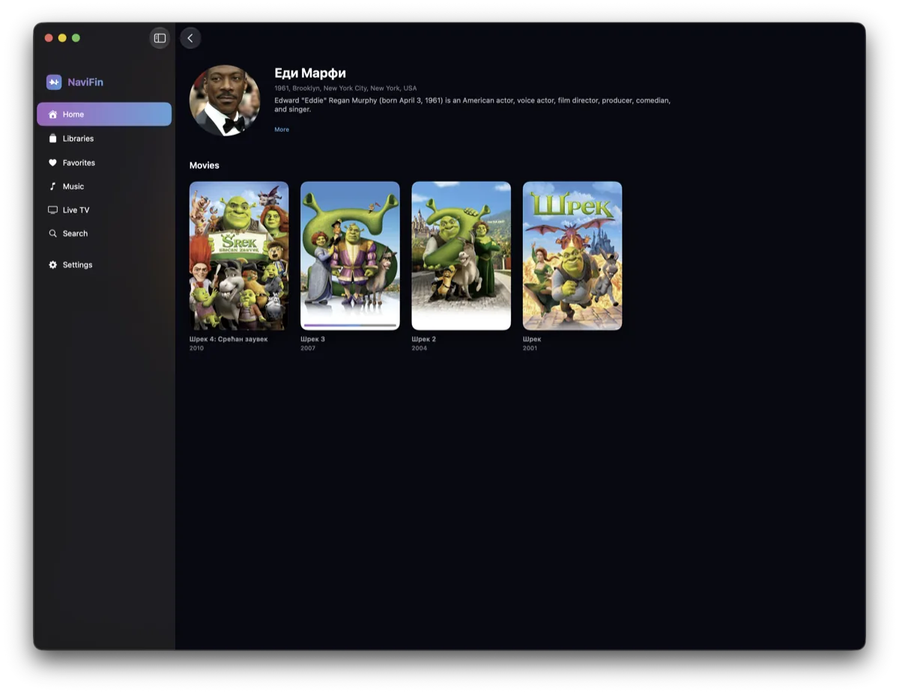
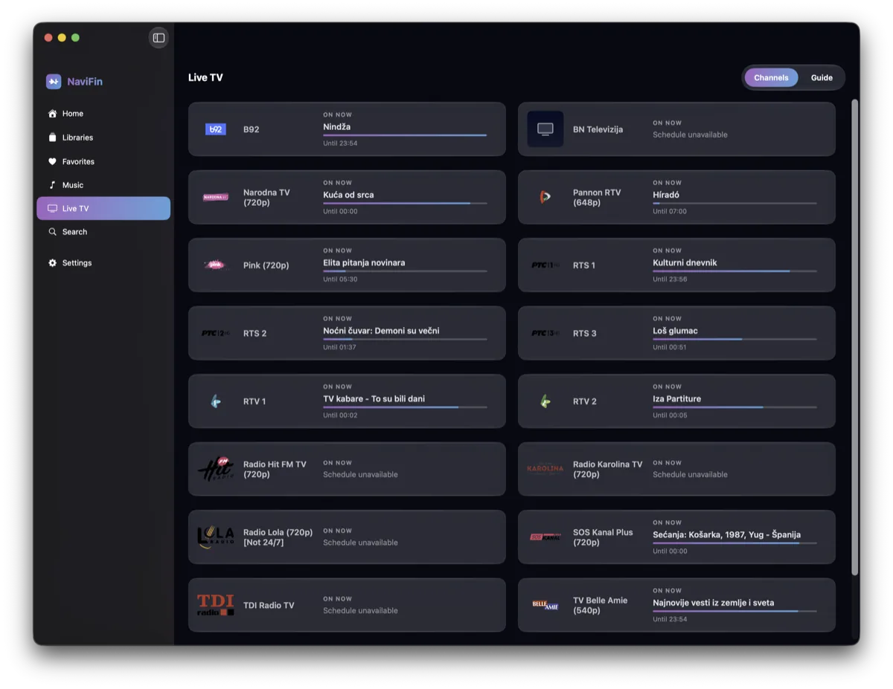
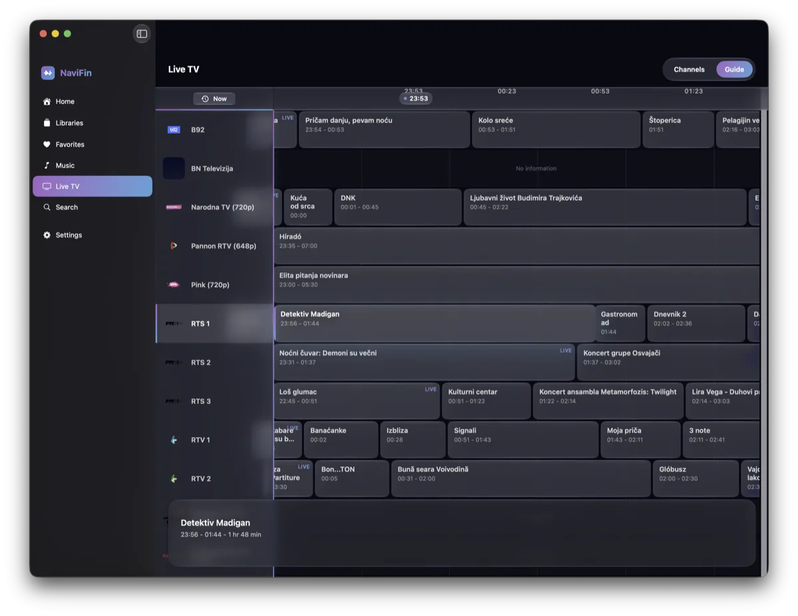

NaviFin
Your Jellyfin library, native on every Apple screen.
If NaviBeat is how you own your music, NaviFin is how you own your movies, TV, music, and Live TV. A premium native Jellyfin player for Apple TV, Mac, iPad, and iPhone, with a hybrid AVPlayer + VLC engine that plays anything you throw at it.
A sister app, same DNA
Same maker. Same principles. A different server.
NaviFin is built by the same person, in the same city, with the same rule: your media lives on your server, and the app has no backend of its own. NaviBeat speaks Subsonic to Navidrome; NaviFin speaks the Jellyfin API to your Jellyfin server. Both stay out of your way.
It just plays
A hybrid AVPlayer + VLC engine handles whatever AVPlayer alone cannot: every codec, every container, every odd file in your library. No transcoding gymnastics on the server.
Your Jellyfin, no cloud in between
NaviFin connects only to the server you sign in to. No analytics, no tracking, no hidden services. Credentials stay in the device Keychain. We never see your library.
Movies, TV, music, Live TV
Your whole Jellyfin library, native: cinematic Apple TV browsing, resume points that sync back to the server, downloads for the plane on iPhone and iPad.
One purchase, every device
Like NaviBeat, NaviFin is planned as a single Universal Purchase that covers Apple TV, Mac, iPad, and iPhone. Buy once, own it on every screen.
A look inside
The shipping app, on the Mac
Real screens from the release on the Mac. The app keeps moving after 1.0, and reports from the first release shape what ships next.





Where things stand
On the App Store.
NaviFin 1.0 shipped on the App Store on 1 September 2026. It has its own site, at navifin.app, which is where the full story lives. TestFlight is the way in.
One purchase, $6.99, for Apple TV, Mac, iPad, and iPhone. Your reports on the first release shape the next one.
NaviFin is heading to the App Store as a Universal Purchase, the same way NaviBeat ships across the Apple ecosystem.
navifin.app is live, with the full feature list, the platform pages and the App Store link. This page is the short version for people who found NaviFin through NaviBeat.
NaviFin is an independent client, not affiliated with or endorsed by the Jellyfin project. A Jellyfin server is required. NaviFin connects only to the server you point it at. New to Jellyfin? Start at jellyfin.org.
Questions
Frequently asked questions
What is NaviFin?
A native Jellyfin player for Apple TV, Mac, iPad and iPhone, built by the same person who makes NaviBeat. It plays movies, TV, music and Live TV from your own Jellyfin server.
Is NaviFin the same app as NaviBeat?
No. They are separate apps for separate servers. NaviBeat speaks Subsonic to Navidrome, and NaviFin speaks the Jellyfin API to your Jellyfin server.
Can I try NaviFin today?
Yes. NaviFin is on the App Store, one purchase for Apple TV, Mac, iPad, and iPhone.
Does NaviFin have a backend of its own?
No. Your media lives on your server, and the app has no backend of its own. That is the same rule NaviBeat follows.